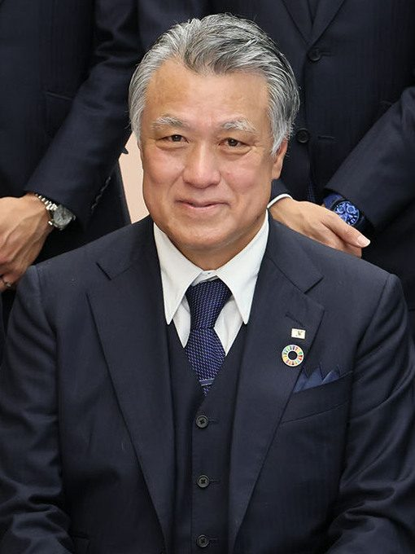

Японец Кодзо Тасима бросит вызов Джанни Инфантино на выборах президента ФИФА
Бывший президент, а ныне почётный президент Японской футбольной ассоциации хочет привнести в мировой футбол «искренность, честность и высокие этические стандарты» японского футбола.

Почётный президент Японской футбольной ассоциации (JFA) Кодзо Тасима выдвинется против Джанни Инфантино на выборах президента ФИФА в марте. Об этом он объявил в четверг, 5 ноября.
68-летний Тасима возглавлял JFA с 2016 по 2024 год и входил в Совет ФИФА. «При полной поддержке JFA я решил выдвинуть свою кандидатуру на выборах президента ФИФА», — приводит его слова Al Jazeera.
Вызов после трудного года для Инфантино

56-летний Инфантино руководит ФИФА с 2016 года и претендует на четвёртый срок. С июля его критикуют после провала плана привлечь частных инвесторов в новую коммерческую компанию ФИФА. Она должна была владеть правами на крупнейшие турниры, включая чемпионат мира, и критики считали, что план ставит коммерческие интересы выше игры, сообщает The Guardian.
Инфантино отвергает призывы уйти в отставку и заявляет, что его поддерживает «подавляющее, подавляющее большинство» национальных ассоциаций. В прошлом месяце Азиатская футбольная конфедерация, в которую входит Япония, поддержала его переизбрание.
Тасима — второй претендент. Первым о выдвижении объявил бывший защитник сборной Швейцарии и «Тоттенхэма» Рамон Вега. Заявки принимаются до 18 ноября.
Репутация японского футбола как аргумент
Японский футбол известен в мире не только результатами, но и поведением. Игроки кланяются трибунам после матчей, а японских болельщиков хвалили за уборку трибун на чемпионатах мира в России и Катаре.
Тасима хочет поделиться этим подходом. По его словам, важно, чтобы мировое футбольное сообщество узнало об «искренности, честности и высоких этических стандартах» японского футбола, и он примет этот вызов «с твёрдой решимостью». В интервью газете Sports Nippon он назвал своей целью донести «честное, здоровое и прямое отношение» японского футбола, пишет The Guardian.
Что на кону
Президент ФИФА руководит организацией, которая проводит чемпионат мира, распределяет средства на развитие между более чем 200 национальными ассоциациями и отвечает за управление игрой. Для ассоциаций Азии, Африки и других развивающихся футбольных регионов это финансирование и представительство имеют ключевое значение.
Сторонники коммерческих планов ФИФА говорят, что новые доходы можно вложить обратно в игру. Критики опасаются, что массовый футбол окажется забыт, если в центре внимания будут частные инвестиции и медиаправа.
У каждой ассоциации — один голос. Учитывая, что его собственная конфедерация уже поддержала Инфантино, итоги мартовских выборов покажут, какую поддержку Тасима сможет собрать в Азии и за её пределами.